注意: 本手册内容普通用户无需掌握
一、什么是火山模块？
火山模块实际上就是一系列以下各类文件的集合：
1、火山模块定义文件；
2、所包含的火山源程序文件；
3、火山源程序文件所需要使用的相关辅助文件(譬如外部库、资源等）
系统类库中的所有类均以模块的方式提供，我们可以打开火山平台安装目录的“plugins\vprj_android\classlib\sys\android\app_updater”子目录，该目录中提供了一个名为“应用程序自动更新支持”的在安卓项目下可用的模块：
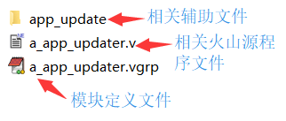
其中一个后缀为“.vgrp”的Unicode文本文件，该文件存储有模块配置信息，其内容格式如下：
doc_format_version = xxx
project_identifier = xxx
name = xxx
[author] = xxx
[version] = xxx
[explain] = xxx
[discard] = true/false
[dependence] = xxx
[unique_mark] = xxx
file
{
[filter] = xxx
name = xxx
}
...
以上属性中,被中括号括住属性的为可选属性,否则为必须提供的属性.
二、如何制作火山模块安装包？
1、模块资源准备
将模块所需的附属资源、火山文件存放到同一个文件夹中。
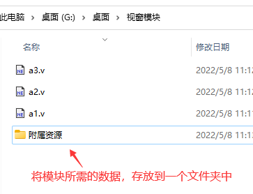
2、模块文件定义
注意: 自从飞扬#21开始，不再需要手工建立本模块定义文件，可以通过系统菜单项“工具->制作模块定义文件”来进行制作，其界面如下：
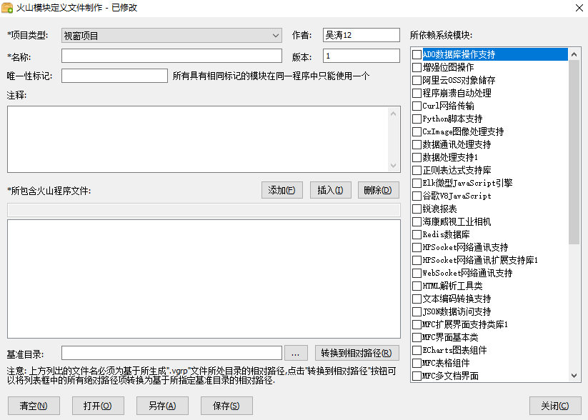
其中1、2、3选项为必填项，其余选项根据需求填写。
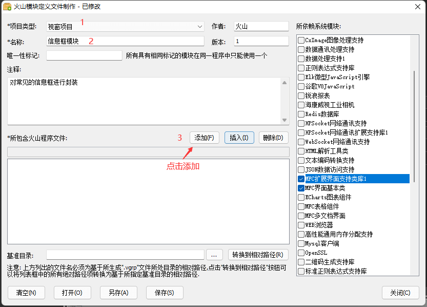
点击“添加”按钮后会弹出一个文件选择对话框，找到所需添加的火山源码文件，进行添加即可。
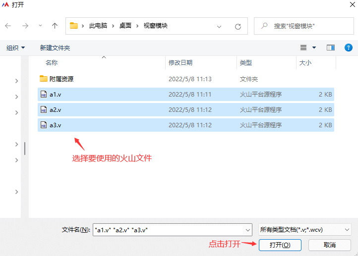
添加后会自动将选择的文件加入到列表中显示，但此时的路径为绝对路径，并不能直接使用。
需要点击“...”按钮选择一个基准目录(也就是模块文件所处目录)。
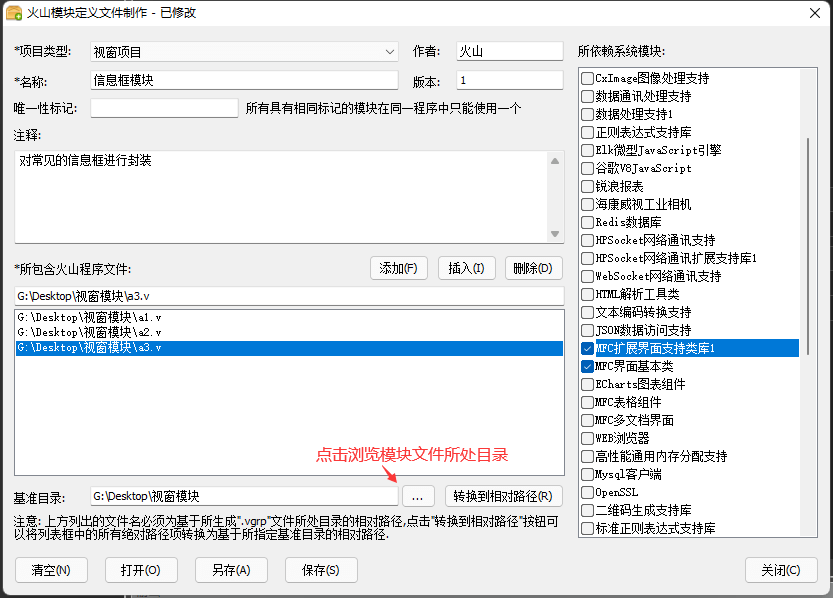
基准目录选择后，点击“转换到相对路径”按钮，会自动将所有选择的火山文件自动转换为相对路径。
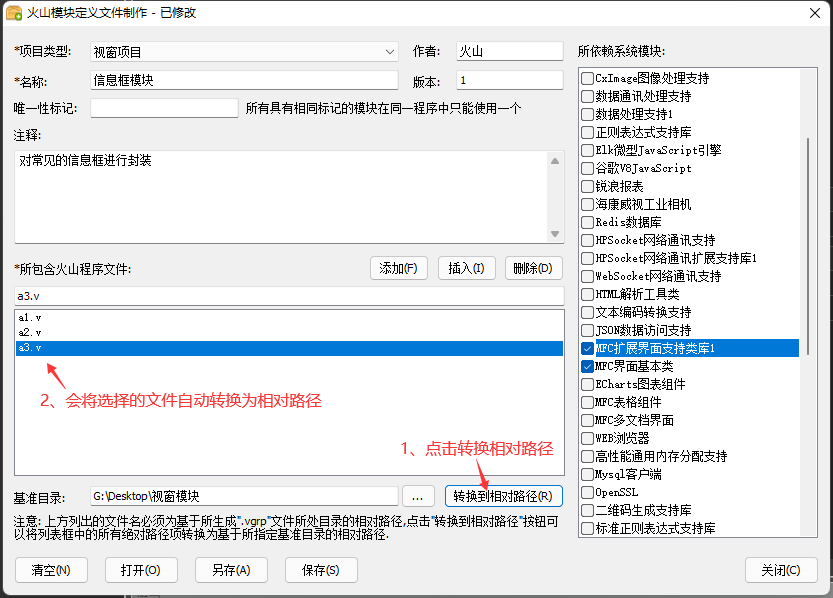
最后保存模块配置文件，务必保存在基准目录所处位置。
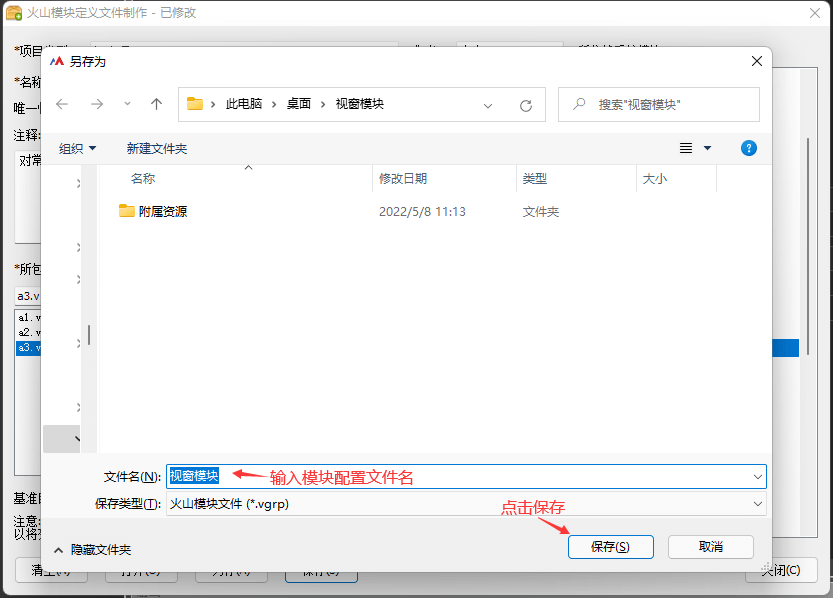
到此模块安装包制作的准备工作完毕：
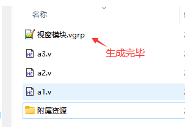
3、模块安装包制作
执行菜单项“工具->制作模块安装包”来生成模块安装包。
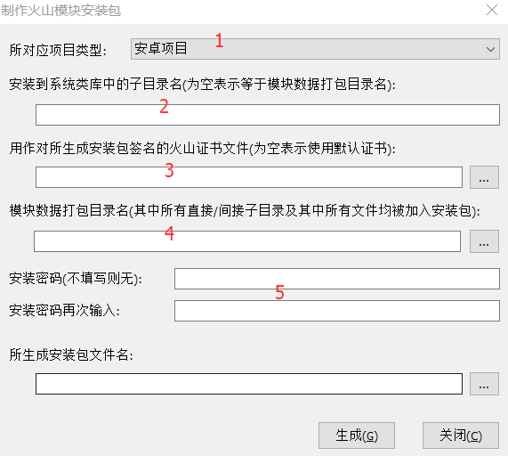
以下为上面对话框中各参数的说明：
1、选择模块所对应的项目类型；
2、指定模块中的内容所欲安装到对应类型项目插件的用户类库根目录的子目录名称；
3、提供用来对所生成模块安装包进行数字签名的火山证书文件，该数字签名用作对模块的作者进行身份认证，有符合要求的作者可以向我公司申请获取证书文件；
4、提供存放有模块中所有内容的被打包目录路径名（上一步中所准备的单个目录），该目录中的所有内容及其子目录结构均将被压缩打包到模块安装包中，然后在安装时原样解压释放到第2个参数所指定的类库目的目录中；
5、用作指定当用户安装所生成的模块安装包时所需要输入的密码。
下图为上面例子所填写的对话框内容：
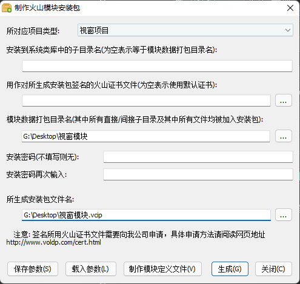
点击“生成”按钮，系统将会显示所有安装包参数并询问是否生成，再点击确认即可生成模块安装包文件。
三、如何安装所指定的模块安装包？
1、执行“工具->安装模块”，然后选中我们先前所生成的模块安装包文件；
2、如果先前生成安装包时设置了密码，将会提示用户输入正确的密码；
3、然后系统会显示该安装包的签名信息，用户确认无误后点击“确定”按钮即可将该模块安装到系统。
安装完毕后，用户就可以在项目中加入并使用此模块了。
系统会自动更新类库手册，并选中当前所安装的模块且显示其帮助页面：
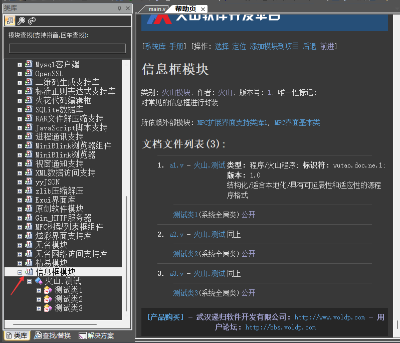
该模块被安装到类库目录中的内容和打包时所提供的内容是完全一致的。实际上，安装模块就是将被打包的模块内容释放到系统类库目录中，因此直接将模块内容拷贝到系统类库目录中效果是一样的，但是不提倡这样做，因为通过安装包安装可以进行譬如身份认证、加密、被覆盖内容详情提示等操作，但是如果只是为了备份/恢复系统中所安装的现有模块，那是可以的。
四、如何在程序中使用火山模块？
打开程序解决方案后，在所欲使用该模块的项目上单击鼠标右键，选择"配置项目所使用模块"菜单项目：
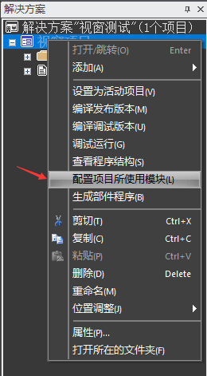
在所显示的对话框中，选择（使用）或者取消选择（不再使用）所指定名称的火山模块，点击确定即可：
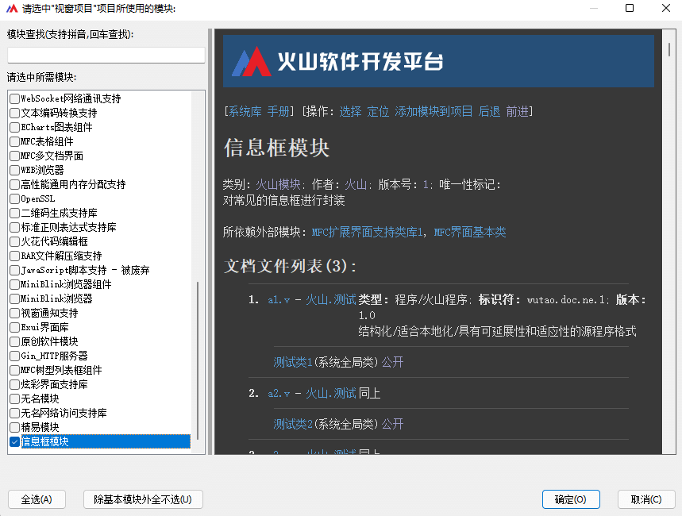
加入模块后，如果当前模块依赖其它模块会一同加入到当前项目中。
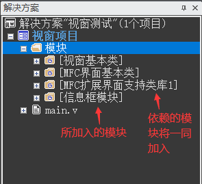
五、如何卸载已经安装的模块？
执行菜单项“工具->卸载模块”，在对话框中选中所欲卸载的模块名称即可将该模块从系统类库中卸除：
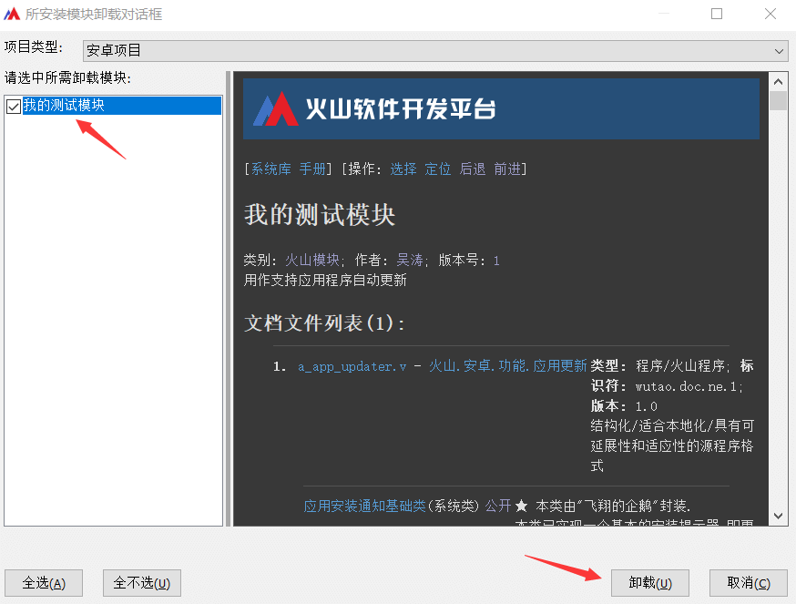
需要注意的是：
1、只有用户自行安装的模块才能被卸载，系统本身自带的模块无法被卸载（在上面对话框中没有列出）；
2、模块被卸载后，所有使用了该模块的项目将无法被正常编译，所有依赖该模块的其它模块将无法正常使用，所以请务必慎重；
3、与安装时相同，卸载的本质就是从系统类库目录中将所指定模块的对应子目录删除，同样除了因为需要备份/恢复现有模块，不推荐直接这样操作。
六、其它
1、安卓平台可用加密措施：
(1) 使用部件可对火山源码进行加密，他人在使用部件程序时，只能看到方法接口无法看到火山源代码，但在程序编译时依然可以看到输出的java源代码。
(2) 利用so或jar库文件对模块关键内容进行加密处理，需要有一定的java/NDK开发经验。
2、视窗平台可用加密措施：
(1) 使用部件可对火山源码进行加密，他人在使用部件程序时，只能看到方法接口无法看到火山源代码，但在程序编译时依然可以看到输出的c++源代码。
(2) 关键代码编译为DLL动态链接库，然后在火山源码中调用dll，以实现关键源码加密效果。在其使用过程中可能需要嵌入c++代码来实现调用dll，需要熟悉c++开发。
(3) 使用部件DLL对火山源码加密，部件DLL和普通的DLL动态链接库没有本质的区别，都是动态链接库。只是前者在编译DLL时会自动生成其火山接口程序，调用起来非常方便。